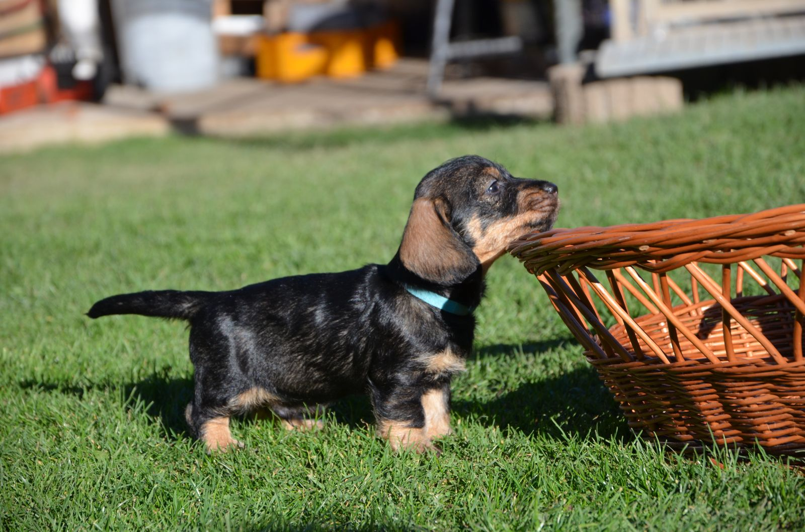
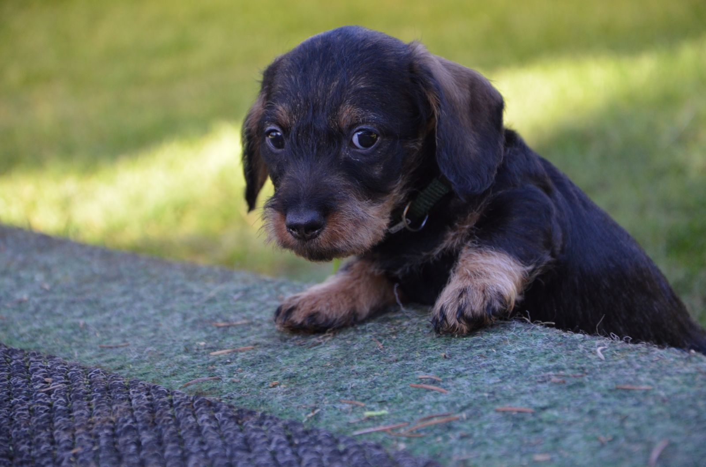

Standard-Rauhaardackel aus Sachsen
Rauhaardackel, groß geworden mitten im Rudel.
Wir züchten unsere Rauhaardackel für Liebhaber und Familien und achten dabei auf Gesundheit und Wesen. Die Kleinen wachsen mit Familienanschluss bei uns auf und lernen alles Wichtige für ihren neuen Lebensweg.
- Familienanschluss
- Jagdliche Abstammung
- Gut sozialisiert
 Hanni & Bonnie
Hanni & Bonnie






Was uns wichtig ist
Familienhunde mit Dackelkopf
Gesundheit & Wesen
Darauf achten wir bei unserer Zucht – die wir ausschließlich für Liebhaber und Familien betreiben.
Aufgewachsen im Rudel
Die Kleinen wachsen mit Familienanschluss bei uns auf, zusammen mit unseren anderen Hunden, und lernen alles Wichtige kennen.
Jagdliche Wurzeln
Wir bilden unsere Dackel nicht zur Jagd aus – die Elterntiere haben aber jagdliche Abstammungen. Bei uns sind sie absolute Familienhunde.
Unsere Dackel
Hanni, Bonnie und der Vater unserer Dackel
Gut sozialisiert und erzogen: Unsere Rauhaardackel helfen oft als „Lehrhund“ auf dem Hundeplatz mit – vor allem die Kinder haben daran große Freude.


Welpen
Ihr sucht einen Rauhaardackel?
Bei Interesse an einem Dackel nehmen wir gern eure Anfrage entgegen und stehen euch mit Rat und Tat zur Seite.
Nächster Wurf: Termin offenJetzt unverbindlich anfragen


Über uns
Ein Rudel, eine Familie
„Unsere Rauhaardackel sind absolute Familienhunde, gut sozialisiert und erzogen.“
Ich bin Karo und lebe mit meiner Familie und unserem Rudel in Luchau, einem Ortsteil von Glashütte. Zu unserem Rudel gehören auch unsere beiden Rauhaardackel-Damen Hanni und Bonnie.
Mehr über uns und die Aufzucht →Kontakt
Schreibt uns – wir freuen uns auf euch.
Erzählt uns ein bisschen von euch und euren Vorstellungen. Wir melden uns gern und beantworten alle Fragen rund um den Rauhaardackel.